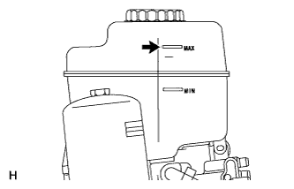

Water or deteriorated brake fluid. Sealed areas or brake fluid may deteriorate and lead to fluid leaks or decreased efficiency.
1. CHECK FLUID LEVEL IN RESERVOIR

Turn the engine switch off and fully depress the brake pedal 40 times or more to release the pressure in the accumulator.
HINT:
When the pressure in the accumulator is released, the pedal stroke will lengthen.
Adjust the fluid level so that it is at the MAX line.
HINT:
When the engine switch is turned on (IG), brake fluid is sent to the accumulator and the fluid level decreases by approximately 10 mm (0.394 in.) from the MAX line.